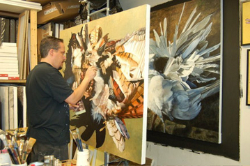

David Garneau was born and raised in Edmonton Alberta, and currently lives in Saskatchewan. Garneau's work consists of painting, drawing, curation and critical writing. He graduated from the Universtity of Calgary with a Bachelor of Fine Arts in painting. He also graduated with a Master of Arts in English literature. Before moving to Regina, Garneau was a teacher at the Alberta College of Art and Design in Calgary. He taught there for five years before moving to Regina. Today he is a faculty member of the University of Regina's Visual Arts Department. He teaches classes in painting, drawing as well as graduate theory courses. He is also an art critic and a curator. Garneau was fascinated by his Métis heritage at a young age. Because of this his paintings explore misconceptions about the Métis.


Return to: Saskatchewan Artists
Contact: david.garneau@uregina.ca